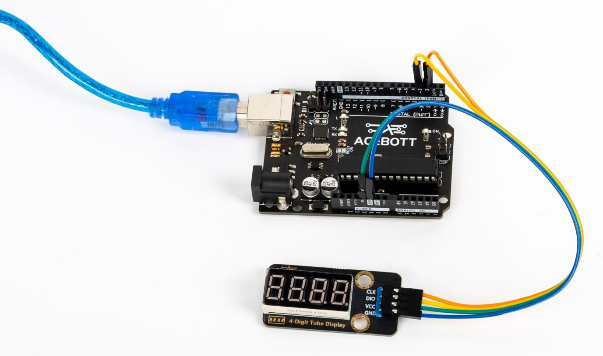

4-Digit Tube Display Module¶
一、Product Introduction¶
{kind=link}
The four-bit ninumber module is a module for displaying digits, which integrates a 4-bit common-anode ninumber module, and uses the driver chip TM1650 to reduce the difficulty of wiring.
Each digit of the digital tube is composed of eight leds (including decimal points), by controlling the different positions of the LED light, you can make it display numbers, characters and symbols.
Application reference: Numerical visualization projects, such as temperature, humidity, counting and other scenes requiring digital display.
二、Parameter Specification¶
| Parameter | Value/Representation |
|---|---|
| Operating voltage | 3.3V~5V |
| Operating temperature | -40°C~+85°C |
| Display color | Red |
| Communication mode | IIC |
| Size | 4.72cm*2.38cm |
三、Wiring Diagram¶

| 4-Digit Tube Display Module | UNO |
|---|---|
| VCC | 5V |
| GND | GND |
| CLK | Digital Pin 2 |
| DIO | Digital Pin 3 |
四、Sample Program¶
1 2 3 4 5 6 7 8 9 10 11 12 13 14 15 16 17 18 19 20 21 | //www.acebott.com
#include "TM1650.h"
#define CLK 2
#define DIO 3
TM1650 DigitalTube(CLK,DIO);
void setup(){
DigitalTube.setBrightness(7);
//Set the brightness of the digital tube from 1 to 7, with 7 being the brightest
DigitalTube.displayOnOFF(1);
//Set the opening and closing of the nixie tube, 0 is off, 1 is on
for(char b=1;b<5;b++){
DigitalTube.clearBit(b); // Clear the specified bit on the TM1650 display
}
DigitalTube.displayDot(4,1); //Turn on the decimal point for the first digit
}
void loop(){
DigitalTube.displayBit(1,4); //Display the number 4 on the first digit
DigitalTube.displayBit(2,3); //Display the number 3 on the second digit
DigitalTube.displayBit(3,2); //Display the number 2 on the third digit
DigitalTube.displayBit(4,1); //Display the number 1on the fourth digit
}
|
五、Test Result¶
After uploading the code to the controller board, the four-digit nixie module will display 4321 in sequence.
